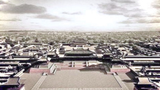

长安是西安的古称，是历史上第一座被称为“京”的都城，也是中国城市建置市（商业区）与坊（住宅区）分设典型 。 周文王时就定都于此，筑设丰京，武王即位后再建镐京，合称丰镐，西安简称“镐”（hào）即源于此。 汉高祖五年（前202年）置长安县，在渭河南岸、阿房宫北侧、秦兴乐宫的基础上兴建长乐宫， 高祖七年（前200年）营建未央宫，同年国都由栎阳迁移至此，因地处长安乡，故名长安城，取意“长治久安”。
长安是十三朝古都，是中国历史上建都朝代最多，建都时间最长，影响力最大的都城，居中国四大古都之首， 是中华文明的发祥地，中华民族的摇篮，中华文化的杰出代表，隋唐时期世界最大的城市。 长安是举世闻名的世界四大文明古都之一，是联合国教科文组织最早确定的“世界历史名城”和国务院最早公布的国家历史文化名城之一。 长安是丝绸之路的东方起点。7000年前的仰韶文化时期已出现城垣雏形，有3100多年建城史和1100多年的国都史， 作为中国首都和政治、经济、文化中心长达一千多年，被誉为天然历史博物馆，是国际著名旅游目的地城市。
长安文化影响极其深远，由于建都长安的周、秦、汉、隋、唐是中国古代最为强盛和文明的黄金时代，因此在唐以后， 虽然长安不再为国都，但“长安”一词却成为国都别称。今天首都北京最重要也最知名的神州第一街——长安街，就是以古长安命名。